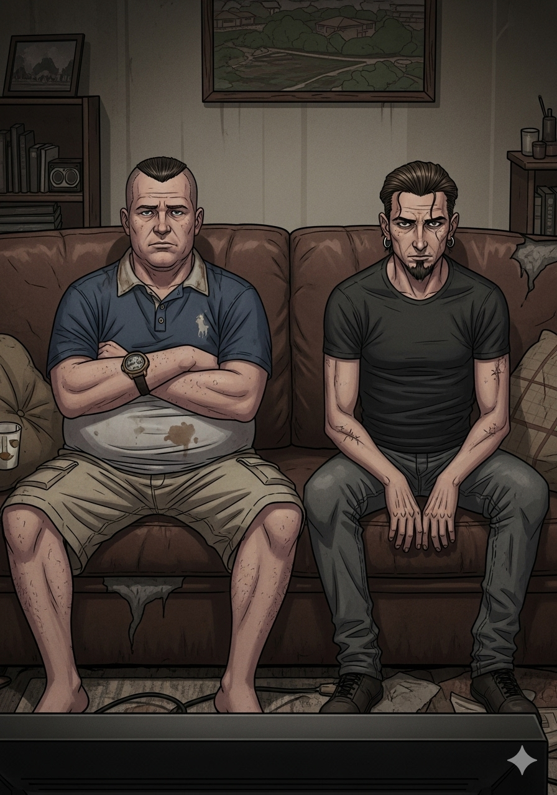
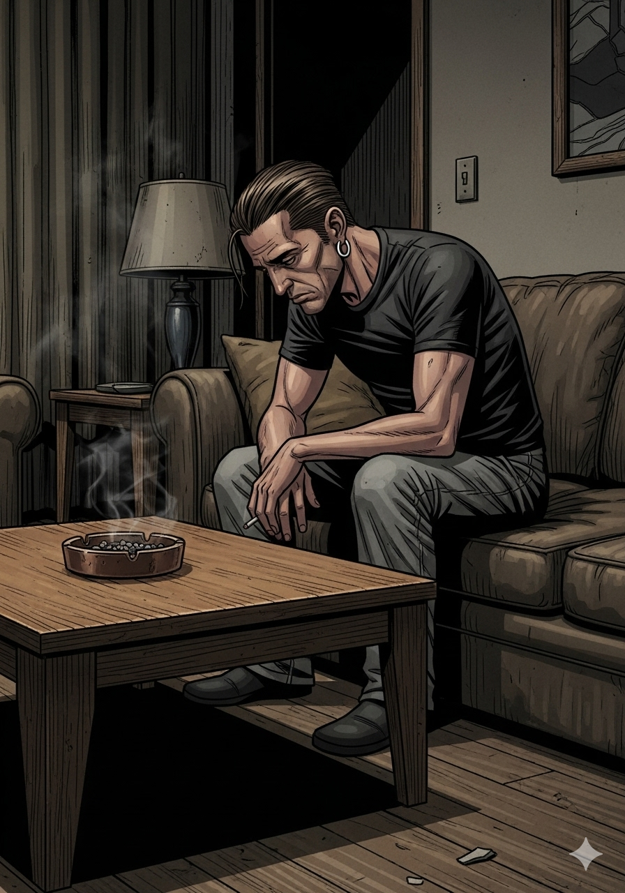
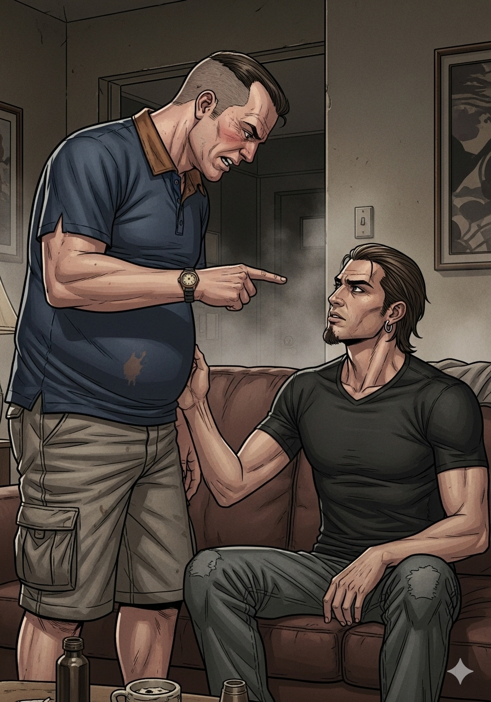
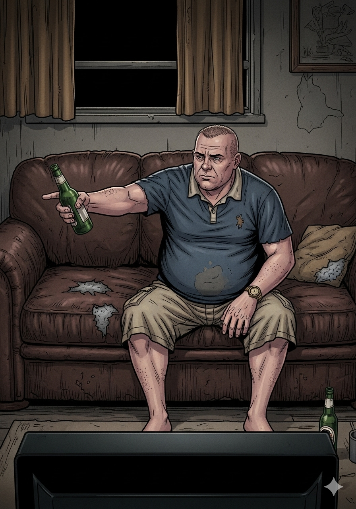
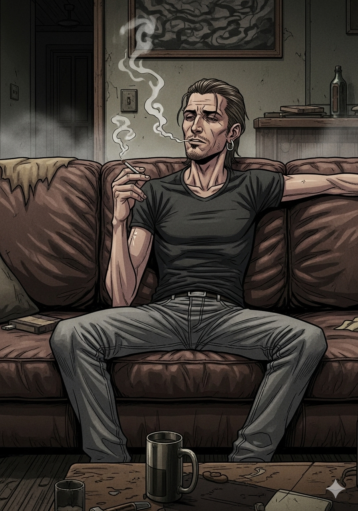
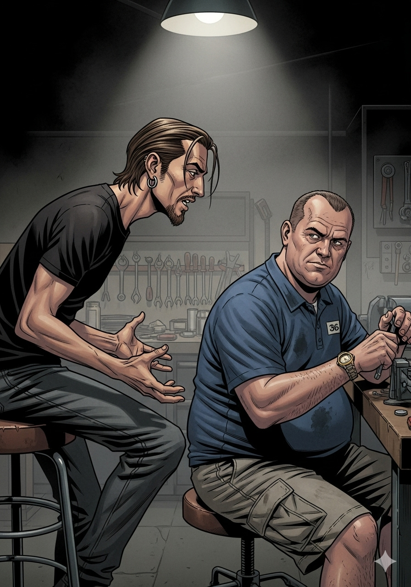

RULO
Toni. Imagina que tienes 24 horas para salvar el mundo. Y que esas 24 horas son… literalmente… un episodio por hora.
TONI
¿Me estás diciendo que cada temporada es un solo día?
Panel 1 — 24 · El día más largo de tu vida

RULO
Jack Bauer. Agente antiterrorista. El tío no duerme, no come, no va al baño. Solo actúa. Y Kiefer Sutherland lo hace tan suyo que la serie entera se sostiene sobre sus hombros.
Panel 2 — Kiefer Sutherland como Jack Bauer

JACK BAUER
No tengo tiempo para explicaciones. Confía en mí.
TONI
¿Cuántas veces lo ha dicho ya?
Panel 3 — La frase más repetida de la UAT

RULO
El formato es único: 24 episodios, 24 horas, tiempo real. El reloj corre. Cada minuto cuenta. Y la pantalla partida te recuerda constantemente que en otro lugar hay otro desastre a punto de explotar.
TONI
¿Y la música de fondo? ¿Ese tic-tac constante?
Panel 4 — El reloj como personaje
24
horas · 24 episodios
por temporada
por temporada

TONI
Llevo seis horas viendo esto. Son las cuatro de la mañana. Tengo que trabajar mañana.
RULO
Claro. Nadie ve solo un capítulo de 24. Es la serie más adictiva que existe. Bienvenido.
NARRADOR
La imposibilidad de ver solo un episodio: el superpoder más diabólico de la televisión americana.
Panel 5 — Síndrome "solo uno más"
¡TICK TOCK!

TONI
¡ERA EL ALIADO DE CONFIANZA! ¡Llevaba cinco episodios siendo mi personaje favorito!
RULO
Bienvenido a 24. Nadie es quien parece. Nadie. Ni los buenos son tan buenos…
Panel 7 — Las traiciones que no ves venir

TONI
Oye… ¿por qué Kim Bauer siempre toma la peor decisión posible? ¿Y por qué hay 24 episodios? A veces se estira un poco…
RULO
Kim es… indefendible. Y sí, 24 episodios dan para algún bache. Pero sigues sin poder parar.
Panel 8 — El único punto flaco reconocible
¡BAUER!

RULO
Las dos primeras temporadas son perfectas. La 4ª también es brutal. Algunas flojan. Pero el ritmo endiablado, los giros y la acción desenfrenada siempre te devuelven a la silla.
Panel 10 — El balance
Curva de calidad

TONI
¿Cuánto le das, Rulo?
RULO
8,5. La serie más adictiva de su época. Jack Bauer es televisión pura. Si empiezas hoy, que alguien llame al trabajo. No vas a dormir esta semana.
Panel 11 — El veredicto final
VEREDICTO FINAL
24 horas. Tiempo real. Sin descanso. Sin excusas.
← Volver al blog
24 — EL DÍA MÁS LARGO
8,5
Thriller · Acción · FOX (2001–2010) · 8 temporadas · 192 episodios
24 horas. Tiempo real. Sin descanso. Sin excusas.
← Volver al blog